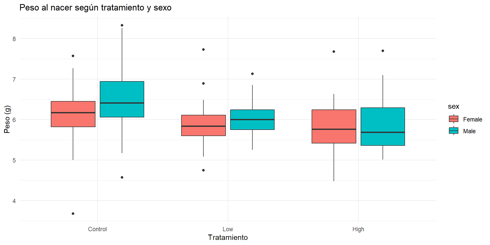
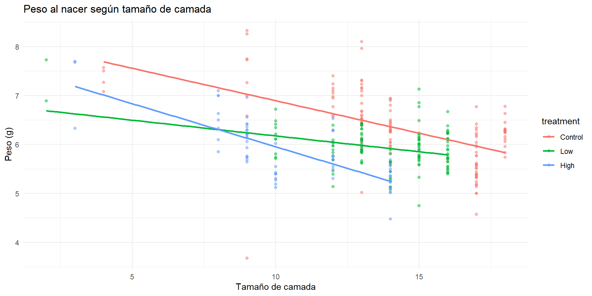
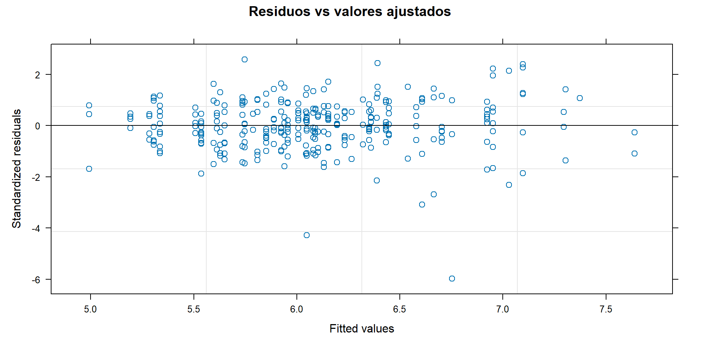

Code
flowchart TD
A[30 ratas hembra] --> B[Tratamiento asignado a nivel de madre]
B --> C[Control\n10 camadas]
B --> D[Dosis Baja\n10 camadas]
B --> E[Dosis Alta\n7 camadas]
C --> F[322 crías — Level 1]
D --> F
E --> F
Ejemplo de las crías de rata — West et al., capítulo 3
Invalid Date
Treinta ratas hembra fueron asignadas aleatoriamente a tres grupos: dosis alta, dosis baja o control de un compuesto químico.
El tratamiento fue asignado a nivel de la madre, por lo que todas las crías de una misma camada comparten el mismo tratamiento.
Pregunta central: ¿Existen diferencias en el peso al nacer de las crías entre los grupos de tratamiento, considerando la dependencia entre crías de una misma camada y ajustando por sexo y tamaño de camada?
flowchart TD
A[30 ratas hembra] --> B[Tratamiento asignado a nivel de madre]
B --> C[Control\n10 camadas]
B --> D[Dosis Baja\n10 camadas]
B --> E[Dosis Alta\n7 camadas]
C --> F[322 crías — Level 1]
D --> F
E --> F
| Variable | Nivel | Tipo | Rol | Codificación |
|---|---|---|---|---|
weight |
1 | Continua | Outcome | Gramos |
sex / sex1 |
1 | Categórica | Covariable | Male = referencia; Female = 1 |
pup_id |
1 | Identificador | Identificación | Una cría |
litter |
2 | Identificador | Agrupación aleatoria | Una madre/camada |
treatment |
2 | Categórica | Predictor principal | Control = referencia |
litsize |
2 | Cuantitativa | Covariable | Número de crías |
trtgrp |
2 | Categórica | Estructura residual | Control vs. High_Low |
| treatment | Camadas | Crias | Peso_medio | DE |
|---|---|---|---|---|
| Control | 10 | 131 | 6.32 | 0.74 |
| Low | 10 | 126 | 5.93 | 0.43 |
| High | 7 | 65 | 5.89 | 0.64 |


Objetivo general: Evaluar la asociación entre el tratamiento materno y el peso al nacer, considerando la agrupación dentro de camadas.
Objetivos analíticos:
flowchart TD
A[Modelo cargado] --> B{¿Se necesita el efecto aleatorio?}
B --> C{¿Qué estructura residual es adecuada?}
C --> D{¿Se conserva la interacción?}
D --> E{¿Hay efecto global del tratamiento?}
E --> F[Modelo final]
Model df AIC BIC logLik Test L.Ratio p-value
model3.1a.fit 1 8 506.5099 536.5305 -245.2550
model3.1.fit 2 9 419.1043 452.8775 -200.5522 1 vs 2 89.40562 <.0001Como se contrasta un único componente de varianza contra cero, West divide por dos el valor p del LRT. Resultado: p < 0.001 → se mantiene el intercepto aleatorio.
Model df AIC BIC logLik Test L.Ratio p-value
model3.1.fit 1 9 419.1043 452.8775 -200.5522
model3.2a.fit 2 11 381.8847 423.1630 -179.9423 1 vs 2 41.21964 <.0001 Model df AIC BIC logLik Test L.Ratio p-value
model3.2a.fit 1 11 381.8847 423.1630 -179.9423
model3.2b.fit 2 10 381.0807 418.6065 -180.5404 1 vs 2 1.196053 0.2741 Model df AIC BIC logLik Test L.Ratio p-value
model3.1.fit 1 9 419.1043 452.8775 -200.5522
model3.2b.fit 2 10 381.0807 418.6065 -180.5404 1 vs 2 40.02358 <.0001 numDF denDF F-value p-value
(Intercept) 1 292 9027.740 <.0001
treatment 2 23 4.241 0.0271
sex1 1 292 61.568 <.0001
litsize 1 23 49.577 <.0001
treatment:sex1 2 292 0.317 0.7288No se encontró evidencia de que la diferencia de peso entre los tratamientos cambie según el sexo de la cría (p = 0.73).
model3.3.ml.fit <- lme(
weight ~ treatment + sex1 + litsize,
random = ~1 | litter,
data = ratpup,
method = "ML",
weights = varIdent(form = ~1 | trtgrp)
)
model3.3a.ml.fit <- lme(
weight ~ sex1 + litsize,
random = ~1 | litter,
data = ratpup,
method = "ML",
weights = varIdent(form = ~1 | trtgrp)
)
anova(model3.3a.ml.fit, model3.3.ml.fit) Model df AIC BIC logLik Test L.Ratio p-value
model3.3a.ml.fit 1 6 368.3706 391.0179 -178.1853
model3.3.ml.fit 2 8 353.7734 383.9698 -168.8867 1 vs 2 18.59723 1e-04p < 0.001 → el tratamiento tiene efecto global significativo.
| Comparación | Componente evaluado | Resultado | Decisión |
|---|---|---|---|
| 3.1 vs 3.1A | Intercepto aleatorio | p < 0.001 | Mantener |
| 3.1 vs 3.2A | Varianza heterogénea | p < 0.001 | Heterogénea |
| 3.2A vs 3.2B | Agrupar High/Low | p = 0.27 | Elegir 3.2B |
| 3.1 vs 3.2B | Confirmar 3.2B | p < 0.001 | Elegir 3.2B |
| anova(3.2B) | Interacción trat×sexo | p = 0.73 | Eliminar |
| 3.3A vs 3.3 (ML) | Efecto tratamiento | p < 0.001 | Mantener |
Linear mixed-effects model fit by REML
Data: ratpup
AIC BIC logLik
372.2784 402.3497 -178.1392
Random effects:
Formula: ~1 | litter
(Intercept) Residual
StdDev: 0.3146374 0.5144324
Variance function:
Structure: Different standard deviations per stratum
Formula: ~1 | trtgrp
Parameter estimates:
Control High_Low
1.0000000 0.5889108
Fixed effects: weight ~ treatment + sex1 + litsize
Value Std.Error DF t-value p-value
(Intercept) 8.327633 0.27406956 294 30.385107 0.0000
treatmentLow -0.433663 0.15226167 23 -2.848140 0.0091
treatmentHigh -0.862268 0.18293359 23 -4.713556 0.0001
sex1 -0.343431 0.04204323 294 -8.168531 0.0000
litsize -0.130681 0.01855194 23 -7.044036 0.0000
Correlation:
(Intr) trtmnL trtmnH sex1
treatmentLow -0.348
treatmentHigh -0.610 0.464
sex1 -0.103 -0.035 -0.006
litsize -0.913 0.064 0.403 0.043
Standardized Within-Group Residuals:
Min Q1 Med Q3 Max
-5.97351495 -0.53695365 0.01508652 0.54234475 2.58286992
Number of Observations: 322
Number of Groups: 27 Approximate 95% confidence intervals
Fixed effects:
lower est. upper
(Intercept) 7.7882461 8.3276330 8.86701987
treatmentLow -0.7486398 -0.4336625 -0.11868526
treatmentHigh -1.2406946 -0.8622677 -0.48384070
sex1 -0.4261753 -0.3434314 -0.26068758
litsize -0.1690581 -0.1306805 -0.09230291
Random Effects:
Level: litter
lower est. upper
sd((Intercept)) 0.2272184 0.3146374 0.4356896
Variance function:
lower est. upper
High_Low 0.4998565 0.5889108 0.6938309
Within-group standard error:
lower est. upper
0.4536291 0.5144324 0.5833856 | Efecto | Estimacion | IC_inferior | IC_superior | |
|---|---|---|---|---|
| (Intercept) | (Intercept) | 8.328 | 7.788 | 8.867 |
| treatmentLow | treatmentLow | -0.434 | -0.749 | -0.119 |
| treatmentHigh | treatmentHigh | -0.862 | -1.241 | -0.484 |
| sex1 | sex1 | -0.343 | -0.426 | -0.261 |
| litsize | litsize | -0.131 | -0.169 | -0.092 |
vc <- VarCorr(model3.3.reml.fit)
var_litter <- as.numeric(vc["(Intercept)", "Variance"])
var_res_control <- as.numeric(vc["Residual", "Variance"])
sd_ratio <- coef(
model3.3.reml.fit$modelStruct$varStruct,
unconstrained = FALSE
)
var_res_high_low <- var_res_control * unname(sd_ratio)^2
icc_control <- var_litter / (var_litter + var_res_control)
icc_high_low <- var_litter / (var_litter + var_res_high_low)
cat("Varianza entre camadas: ", round(var_litter, 4), "\n")Varianza entre camadas: 0.099 Varianza residual Control: 0.2646 Varianza residual High/Low: 0.0918 ICC Control: 0.2722 ICC High/Low: 0.5189 
Ignorar la agrupación habría ocultado una parte importante de la estructura de los datos. El modelo mixto permitió estimar simultáneamente los efectos promedio del tratamiento y la variabilidad entre y dentro de las camadas.
lmer() no permite varianzas residuales heterogéneaslme() de nlmelmer() solo llega hasta Model 3.1 en este ejemplo| Situación | Método |
|---|---|
| Comparar modelos con distintos efectos fijos | ML |
| Estimar modelo final e interpretar parámetros | REML |
| Comparar modelos con mismos efectos fijos | REML |
Cuando se prueba si una varianza es cero, el parámetro está en el límite del espacio parametral. El LRT estándar no aplica directamente y el p-value se divide por 2.
flowchart TD
A[Model 3.1] --> B{H3.1: ¿Intercepto aleatorio?}
B -->|Sí p<0.001| C{H3.2-3.4: ¿Varianza heterogénea?}
C -->|Sí elegir 3.2B| D{H3.5: ¿Interacción?}
D -->|No p=0.73| E{H3.6: ¿Efecto tratamiento?}
E -->|Sí p<0.001| F[Model 3.3 Final]
Bioestadística Avanzada